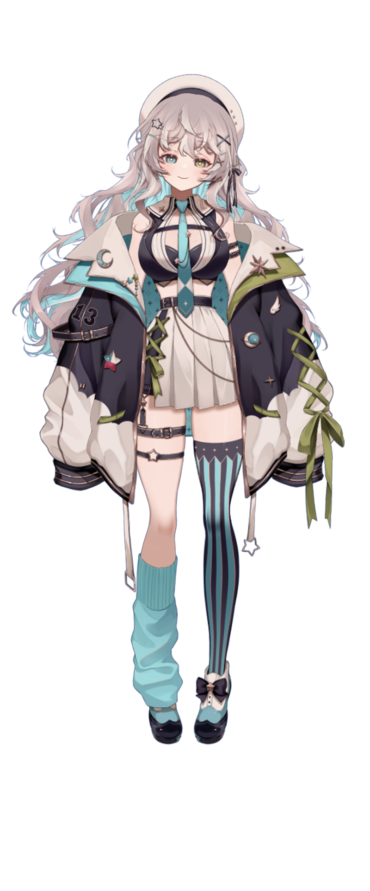

País:
Chile
Cumpleaños:
29 de Diciembre
Altura:
1.75 m
Comida favorita:
Sopa
Comida que detestas:
La carne no magra
Videojuego favorito:
Alice: Madness Returns
Serie favorita:
Over the garden wall
Gustos musicales:
Retro
Anime favorito:
Madoka Magica
Signo Zodiacal:
Capricornio
Animal favorito:
Estrella de mar
Color favorito:
Azul
Modelo:
Yo y yo :D
Hashtag:
#fanoart